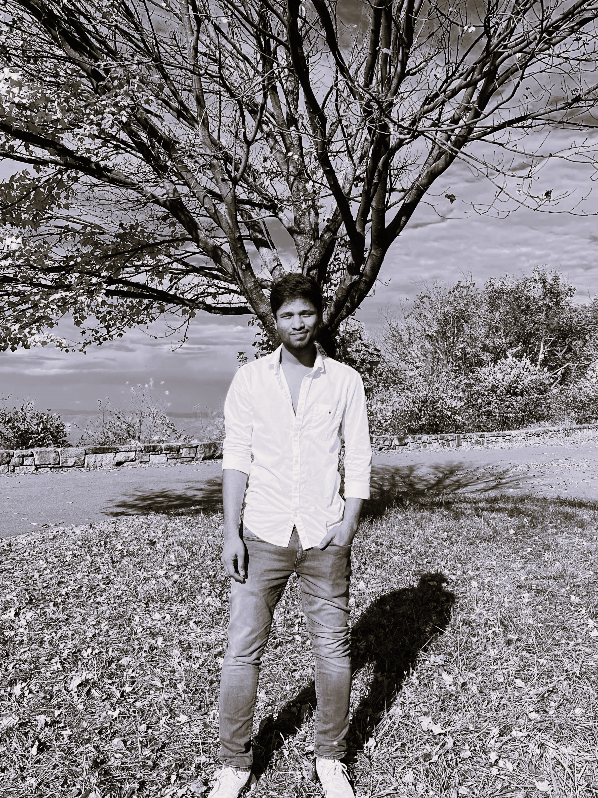

AN ASPIRING ENGINEER.
I am currently pursuing a Master of Science in Computer Science at George Mason University, with an expected graduation date of May 2025. With a strong foundation in software development and cloud technologies, I am skilled in programming languages such as C, C++, Java, Python, and SQL, and I have experience with full-stack web development using AngularJS, ReactJS, and Spring Boot. I also hold several certifications, including Oracle Cloud Infrastructure Architect Associate and Microsoft Developer Associate (AZ-204), reflecting my proficiency in cloud computing and multi-cloud networking.
Throughout my academic and project experiences, I have worked on a variety of innovative solutions, including lung cancer detection using transfer learning and EfficientNet B2 architecture, achieving a 90.18% accuracy rate. I am also collaborating on a research paper focused on maize plant disease detection using deep learning techniques. My passion for problem-solving has led me to develop multiple applications, from real-time weather analysis to e-commerce platforms, showcasing my attention to detail and commitment to creating efficient, user-focused software.
Phone: +1 703.589.5407
Email: vnandamu@gmu.edu